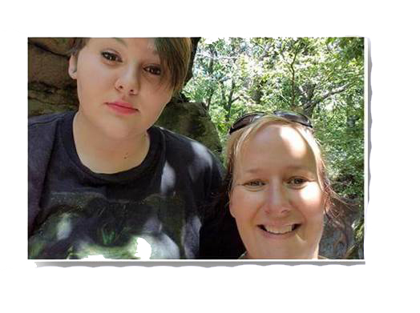
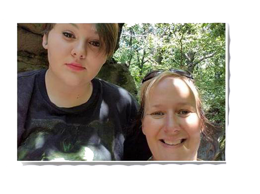

Makenna Ewing
 

Hi I am Makenna Ewing
I am a person who has many skills and interest. For example, I am interested into music, computers, psychology, and cooking. I am very skilled with computers. I currently work at a local grocery store, there I am a cashier. I take pride in my job. I am also a student at Armstrong Jr. Sr. High.
Every high school student are pushed to decide their careers early in life. So many Americans do not stick with the career path they have chosen in high school. Me personally, I don’t know what I would like to do when I grow up. My entire goal in life is not to struggle or be a teen mom. I would love to be able to make enough money to pay back my mom for all the stuff she has bought me because she is a wonder mother and deserves it all.
In the end, I got know what i want to do with my life, but I know I will go somewhere when I find my calling.